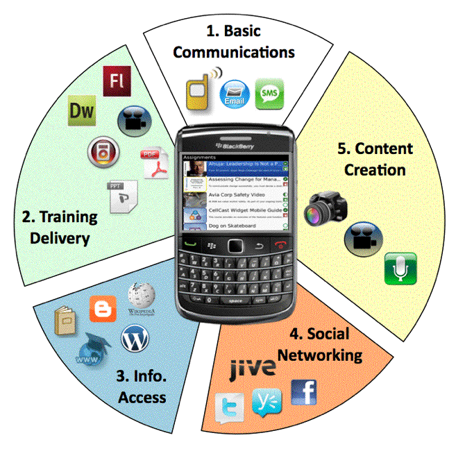

| Type Of ICT Tools |
Defination |
Example |
| Educational Networking |
Online learning platforms that connect learners using social networking
technologies, exhibiting similar funtions to sites like facebook.
| 
|
| Web-based learning |
A set of online applications or services that expand learners' abilities
to interact and collaborate with each other in the process of searching,
receiving, organizing, and generating educational content
|  |
| Mobile leaning |
Mobile devicesor or technologies used for educatinal purpose that support
different aspects of instuction or make new educational activities avliable
| 
|
| Classroom equipments |
Stand-alone devices that are used in traditional classrooms for facilities
the interaction between teachers and students in different class activities
| 
|